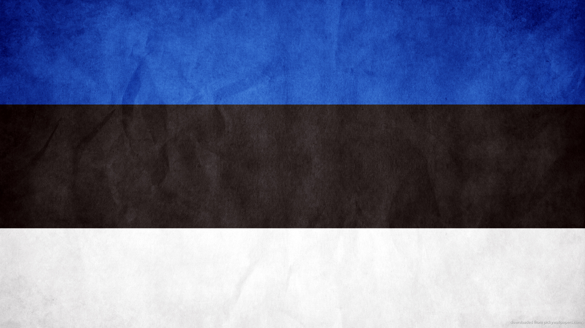

KOLGA
ESTNISKA GRENEN
På Artur Kolgas sida finns ingen släkt kvar i livet.
På Leida Kolgas sida finns släkt kvar i Viljandi. Men om dessa vet vi ingenting. Det är framför allt Leida Kolgas farbror Johann Koovit som har släkt i livet. Johann fick fem barn. Av dessa lever bara Jaan Koovit som är alltså Leidas kusin. Jaan är gift med Elvi och bor i Jöhvi i nordöstra Estland. De har en dotter Urve (född 1960) som bor i Tallinn och har en son Siim (född 1981). Siim är gift med Maarja-Liisa och bor också i Tallinn. De har en son, Mihkel, född 2016. Urve är alltså syssling till Andrus, Hele-Mall och Hendrik. Siim är tremänning till Andrus, Hele-Malls och Hendriks barn. Leida Kolgas kusin Leida Konsik på mödernet (född Usbek) föddes 1915 och dog 1950. Hon efterlämnar två barn: Ene Kalda och Toomas Konsik. Ene (född 1950) bor på Lidingö, Toomas bor i Tallinn. Andrus, Hele-Mall och Hendrik är alltså sysslingar till Ene och Toomas.
Här kan Diana skriva om Konrads estniska gren om hon vill.
FOTOGRAFIER
AKTUELLA EVENEMANG
Senaste evenemang
KolgaDagen lördagen den 19 augusti 2017
LEDIA KOLGA TROHPY
Leida Kolga Trophy startade 1995 som en golftävling för Leida Kolgas barn med respektive samt även deras barn. Den senaste tävlingen genomfördes i augusti 2015 och kommer att återuppstå år 2018. Då bjuds alla i släkten Kolga in.